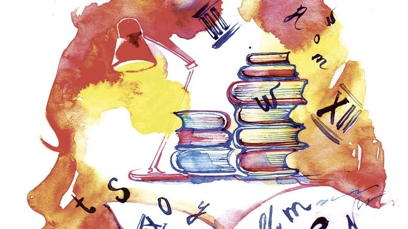

Descansar
Aproveché el tiempo para descansar, dormir hasta un poco más tarde de lo usual y terminar una serie que había comenzado.
Compartir en Familia

Junto a mi familia, pasamos una tarde en El Carmen de Viboral. Recorrimos y conocimos el pueblo, admiramos las cerámicas y almorzamos. De la misma manera, salimos a comer helado, fuimos a saludar a Dios y a orar en la iglesia juntos, participando de los eventos de la Semana Santa.
Estudiar

Adelanté un poco y finalicé mis compromisos pendientes de Riwi. Además, repasé algunos conceptos que quería reforzar.